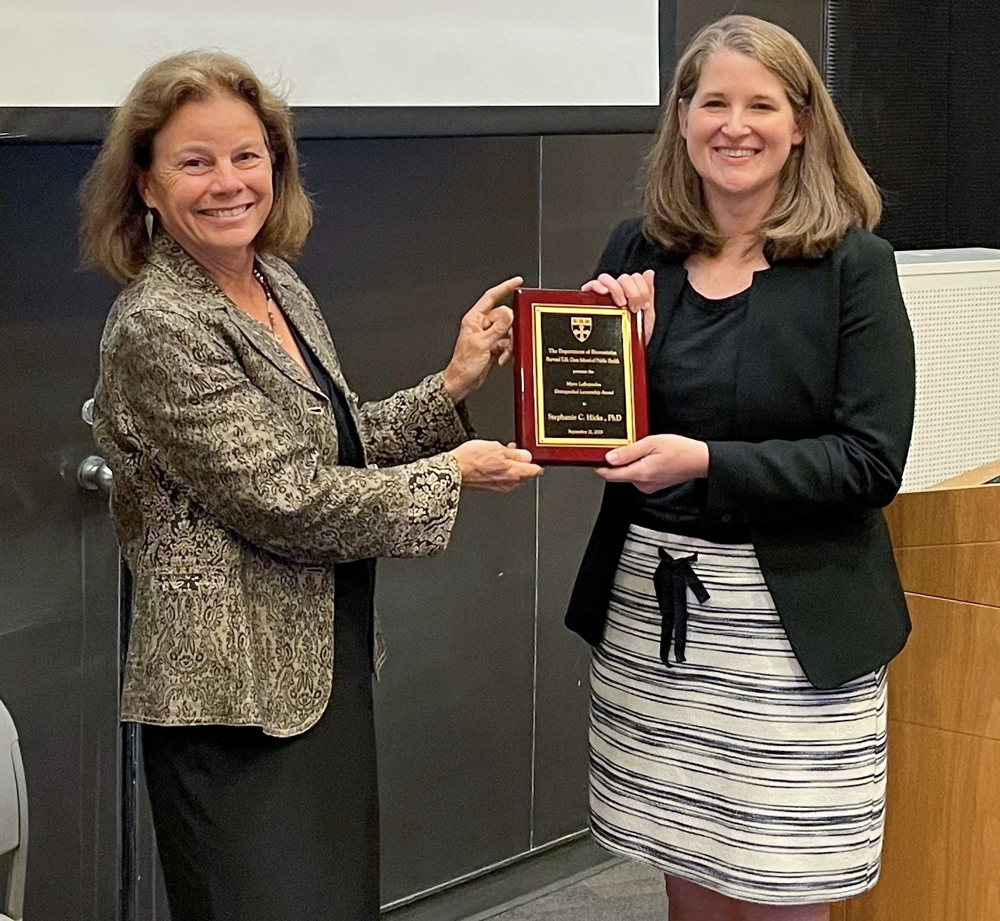

Talks
2025
- Department of Genetics and Genomic Sciences. Icahn School of Medicine at Mount Sinai. 2025 Jun 4. New York City, NY. USA.
- STATGEN Conference. 2025 21-23 May. Minneapolis, MN. USA.
- Biology of Genomes. 2025 May 6-10. Cold Spring Harbor Laboratory. USA.
- CZI Cell Science 2025 annual meeting. 2025.
- NERVSPAN. 2025 Apr 7-9. Bordeaux, France.
2024
- CSHL Biological Data Science. 2024 Nov 13-16. Cold Spring Harbor Laboratory. USA.
- Inaugural Visiting Professor Seminar Series (nominated and selected by HMS student body). Department of Biomedical Informatics. Harvard Medical School. 2024 Oct 3. Boston, MA. USA.
- Kavli NDI. Johns Hopkins University. 2024 Oct 2. Baltimore, MD. USA.
- Nebraska Center for the Prevention of Obesity Diseases through Dietary Molecules. University of Nebraska-Lincoln. 2024 Sept 25. Lincoln, NE. USA.
- Keynote presentation at the Workshop on Spatial and Temporal Statistical Modeling in Molecular Biology at Congressi Stefano Franscini at Monte Verità. 2024 Sept 8-13. Ascona, Switzerland.
- Invited session on “Building Better Data Analyses: Theory, Methods, and Lessons Learned”. Joint Statistical Meetings. 2024 Aug 3-8. Portland, OR. USA.
- Keynote presentation at R/Medicine 2024. 2024 Jun 13.
- Boston University Bioinformatics Student-Organized Symposium. 2024 June 5. Boston, MA. USA.
- Department of Biostatistics, Epidemiology and Informatics. Perelman School of Medicine at the University of Pennsylvania. 2024 May 7. Philadelphia, PA. USA.
- Invited session on “Spatial mapping of tissues at single cell resolution: statistical models and computational paradigms”. STATGEN Conference. 2024 1-3 May. Pittsburgh, PA. USA.
- Department of Biostatistics. Unviersity of Washington. 2024 Apr 25. Seattle, WA. USA.
- Invited session on “Statistical methods for population scale single cell RNA-seq data and spatial transcriptomics”. ENAR Conference. 2024 Mar 10-13. Baltimore, MD. USA.
- Co-organizer of Statistical Aspects of Trustworthy Machine Learning at Banff International Research Station. 2024 Feb 11-16. Banff, Alberta. CA.
- Plenary talk at Advances in Genome Biology and Technology (AGBT). 2024 Feb 5-8. Orlando, FL. USA.
- Department of Biostatistics. University of Pittsburgh. 2024 Jan 25. Pittsburgh, PA. USA.
- Marie Skłodowska-Curie Actions Doctoral Network. 2024 Jan 24. Bordeaux, France.
2023
- Invited panel at American College of Neuropsychopharmacology (ACNP) 62nd Annual Meeting. 2023 Dec 3-6. Tampa, FL. USA.
- CSHL Computational Genomics Course. 2023 Nov 29-Dec 6. Cold Spring Harbor Laboratory. USA.
- Department of Statistical Sciences. Wake Forest University. 2023 Oct 17. Winston-Salem, NC. USA
- Keynote presentation at the Workshop on Reading, Assembling, Analyzing, and Designing Genomic Data at the AI in Health Conference. 2023 Oct 9. Houston, TX. USA.
- Myrto Lefkopoulou Distinguished Lecturership. Harvard T. H. Chan School of Public Health. 2023 Sept 21. Boston, MA. USA.

- Mathematical Institute for Data Science (MINDS) / Center for Imaging Science (CIS). Johns Hopkins University. 2023 Sept 12. Baltimore, MD. USA.
- Invited session on “Advanced Statistical Methods in Spatial biology”. Joint Statistical Meetings. 2023 Aug 5-10. Toronto, Ontario. CA.
- Reproducible and FAIR Bioinformatics Analysis of Omics Data. 2023 Jul 18. Bar Harbor, ME. USA.
- Annual Liverpool School of Tropical Medicine (LSTM) Postgraduate Researcher Conference. 2023 Jun 27-28. Liverpool, UK.
- Department of Epidemiology and Biostatistics at Memorial Sloan-Kettering Cancer Center. 2023 June 7. New York City, NY. USA.
- Symposium on Epigenome Sciences. Johns Hopkins University. 2023 May 22. Baltimore, MD. USA.
- Translational Data Science Integrated Research Center. Fred Hutch. 2023 May 4. Seattle, WA. USA.
- Department of Biomedical Engineering. Johns Hopkins University. 2023 Apr 20. Baltimore, MD. USA.
- Department of Biostatistics. Vanderbilt University. 2023 Mar 29. Nashville, TN. USA.
- Invited session on “Decomposing Admixed Genomics Data: Cell-type-aware Analysis Methodology Advances”. ENAR Conference. 2023 Mar 19-22. Nashville, TN. USA.
- Moderator at the ‘Single Cells, Single Cells, Single All the Way’ session. American Association for the Advancement of Science (AAAS) Annual Meeting. 2023 Mar 2-5. Washington D.C. USA.
- JHU Biostatistics PhD Visitors Weekend. 2023 Feb 17. Baltimore, MD. USA.
- Genetics, Bioinformatics and Systems Biology Colloquium. UCSD Bioinformatics and Systems Biology (BISB) Graduate Program. 2023 Feb 16. San Diego, CA. USA.
- Center for Bioinformatics and Computational Biology (CBCB). University of Maryland. 2023 Feb 2. College Park, MD. USA.
- Institute for Data Science and Artificial Intelligence. Department of Mathematics. University of Exeter. 2023 Feb 1. Exeter, South West England, United Kingdom.
- Boston R/Bioconductor for Genomics. 2023 Jan 27. Boston, MA. USA.
2022
- CSHL Winter Course on Computational Genomics Course. 2022 Nov 30-Dec 12. Cold Spring Harbor Laboratory. USA.
- Biological Data Science. 2022 Nov 9-12. Cold Spring Harbor Laboratory. USA.
- Keynote presentation at the Johns Hopkins Institute for Data Intensive Engeering and Science (IDIES) 2022 Annual Symposium. 2022 Oct 20. Baltimore, MD. USA.
- Department of Statistics and Data Science. The Wharton School at The University of Pennsylvania. 2022 Oct 19. Philadelphia, PA. USA.
- Refining best practices for reproducibility to improve the quality of data analyses in statistics and data science. Invited session on “A Multi-disciplinary View of Reproducibility”. Joint Statistical Meetings. 2022 Aug 6-11. Washington DC. USA.
- Increasing the reproducibility and rigor of single-cell RNA-seq through the use of statistics and data science. Reproducible and FAIR Bioinformatics Analysis of Omics Data. 2022 Jul 18. Bar Harbor, ME. USA.
- CSHL Summer Course on Single Cell Analysis. 2022 Jul 5-6. Cold Spring Harbor Laboratory. USA.
- CSHL Summer Course on Statistical Analysis of Genome Scale Data. 2022 Jul 1-14. Cold Spring Harbor Laboratory. USA.
- NHGRI-NIEHS Workshop on RNomics. 2022 24-26 May.
- Department of Genetic Medicine. Johns Hopkins University SOM. 2022 May 18. Baltimore, MD. USA.
- Design principles for data analysis. R-Ladies East Lansing. 2022 Apr 14.
- Department of Biochemistry and Molecular Biology. Michigan State University. 2022 Apr 14. Lansing, MI. USA.
- 2022 NHGRI Research Training & Career Development Annual Meeting. 2022 Apr 3-6.
- Making genomic data science accessible, reproducible, and scalable to improve human health. Department of Biostatistics at Brown School of Public Health. 2022 Mar 23. Providence, RI. USA.
- Department of Physiology and Biophysics and the Institute for Computational Biomedicine (ICB) at Weill Cornell Medicine (WCM). 2022 Mar 14. New York City, NY. USA.
- Applied Bioinformatics in Life Sciences (4th edition). VIB Conference (Plenary session). 2022 Mar 10-11. Leuven, Belgium.
- Spring MIT Bioinformatics Seminar Series. MIT Math Department and the Computer Science and Artificial Intelligence Laboratory (CSAIL). Massachusetts Institute of Technology. 2022 Feb 23. Boston, MA. USA.
- Department of Biostatistics. Virginia Commonwealth University. 2022 Feb 4. Richmond, VA. USA.
- Department of Mathematics & Statistics. McMaster University. 2022 Jan 28. Hamilton, Ontario, Canada.
2021
- Department of Biostatistics. University of Michigan. 2021 Dec 9. Ann Arbor, MI. USA.
- AI & Health Data Issues panel discussion at the Stanford AI + Health Online Conference. Institute for Human-Centered Artificial Intelligence at Stanford University and the Stanford Center for Continuing Medical Education (Stanford CME). 2021 Dec 8-9.
- Department of Biostatistics, Epidemiology and Informatics. University of Pennsylvania Perelman School of Medicine. 2021 Nov 30. Phildelphia, PA. USA.
- 6th Annual Mid Atlantic Bioinformatics Conference. 2021 Nov 8. Philadelphia, PA. USA. [Watch on YouTube].
- Department of Applied Mathematics and Statistics. Johns Hopkins University. 2021 Nov 4. Baltimore, MD. USA.
- Lieber Institute Speaker Series. Lieber Institute for Brain Development. 2021 Oct 26. Baltimore, MD. USA.
- Joint Carnegie Mellon University - University of Pittsburgh PhD Program in Computational Biology. 2021 Oct 8. Pittsburgh, PA. USA.
- Community of Scholars (COS) Seminar Series in the Clinical and Translational Science Institute (CTSI) K Scholar Program. University at Buffalo. 2021 Sept 27. Buffalo, NY. USA.
- COPSS Leadership Academy Award from the American Statistical Association (ASA) presented at the COPSS Distinguished Achievement Award and Lectureship. Joint Statistical Meetings. 2021 Aug 7-12. Seattle, WA. USA.
- Evaluating the Alignment of a Data Analysis between Analyst and Audience. Invited session on “Theoretical and Empirical Contributions to Data Analytic Practice”. Joint Statistical Meetings. 2021 Aug 7-12. Seattle, WA. USA.
- Increasing the reproducibility and rigor of single-cell RNA-seq through the use of statistics and data science. Reproducible and FAIR Bioinformatics Analysis of Omics Data. 2021 Jul 15. Bar Harbor, ME. USA.
- Scalable statistical methods and software for single-cell data science. Maths in the Life Sciences Seminar Series. Joint seminar held between the Applied Maths and Biostatistics and Data Science Departments. University of Manchester. 2021 Jul 12. Manchester, England, UK. [Watch on YouTube].
- Scalable statistical methods and software for single-cell data science. Dynamics and Networks in Single-cell Biology Minisymposium at the Society for Mathematical Biology. University of California Riverside. 2021 Jun 13-17. Riverside, CA. USA.
- Scalable statistical methods and software for single-cell data science. Biostatistics Seminar. Department of Biomedical Data Science. Stanford School of Medicine. 2021 Mar 11. Stanford, CA. USA. [Watch online].
- Scalable statistical methods and software for single-cell data science. Stanford Center for Biomedical Informatics Research. Stanford School of Medicine. 2021 Feb 25. Stanford, CA. USA.
- Addressing Open Challenges in Data Science Education. Department of Statistics, University of British Columbia. 2021 Feb 9. Vancouver, BC. Canada.
- Scalable statistical methods and software for single-cell data science. National Cancer Institute (NCI) / Center for Cancer Research (CCR) Bioinformatics Training and Education Program (BTEP) Distinguished Speakers Seminar Series. 2021 Jan 28.
- Scalable statistical methods and software for single-cell data science. Department of Bioinformatics and Biostatistics. University of Louisville. 2021 Jan 15. Louisville, KY. USA.
Earlier years
2020
- Bloomberg American Health Summit 2020. 2020 Dec 9. Baltimore, MD. USA.
- CZI Essential Open Source Software (EOSS) Annual Meeting. 2020 Dec 8-10.
- Large-scale clustering in Bioconductor. CZI Seed Network Annual Meeting. 2020 Nov 17-19.
- Scaling up single-cell data analyses in Bioconductor. Oz Single Cell. 2020 Nov 18. Melbourne, Australia.
- Scaling up single-cell data analyses in Bioconductor. Biological Data Science. 2020 Nov 4-7. Cold Spring Harbor Laboratory. USA.
- More (single-cell) data, more (statistical) problems. Human Medical Genetics and Genomics Program, University of Colorado (Anschutz Medical Campus). 2020 Oct 22. Denver, CO. USA.
- Introduction to GenomicRanges and plyranges. R-Ladies Tunis. 2020 Oct 6.
- Setting the Stage for Reproducibility in Single-Cell Data Science. Rigor and Reproducibilty in Cancer Research. Rogel Cancer Center. University of Michigan. 2020 Sept 24. Ann Arbor, MI, USA.
- Addressing Public Health Challenges with Statistics, Genomics and Data Science. Annual presentation on my research interests in “Current Topics” courses as part of my participation as a Preceptor in the Department of Biochemistry and Molecular Biology’s NCI-supported PhD training program.
- Panelist on Celebrating Florence Nightingale’s Bicentenary. Joint Statistical Meetings. 2020 Aug 1-6. Philadelphia, PA, USA.
- Communicating statistics and data science to the masses via Open Case Studies. Joint Statistical Meetings. 2020 Aug 1-6. Philadelphia, PA, USA.
- Bench pressing single-cell RNA-sequencing imputation methods. Bioconductor Conference. 2020 Jul 29-31. Boston, MA. USA.
- Analyzing Genomics Data in R with Bioconductor. R-Ladies Riverside. 2020 Jul 22.
- Addressing Real-World Challenges through Data Science Education. Academic Data Science Alliance (ADSA) Data Science Education special interest group (SIG). 2020 Jul 2.
- Annual Symposium of the Division of Gastroenterology at Johns Hopkins University. 2020 Jun 23. Baltimore, MD. USA. (Postponed to due COVID-19).
- Mathematical Frameworks for Integrative Analysis of Emerging Biological Data Types at Banff International Research Station. 2020 Jun 14-19.
- Using R and data science to improve human health. Keynote presentation at The European R Users Meeting. 2020 June 17-20. Milan, Italy.
Watch a pre-conference interview here:
- Symposium on Data Science and Statistics (SDSS). 2020 Jun 3-5. Pittsburgh, PA. USA.
- Fast clustering for single-cell RNA-seq data using mini-batch k-means. ENAR Conference. 2020 Mar 22-25. Nashville, TN. USA.
- WiDS Conference 2020. US Bureau of Labor Statistics. 2020 Mar 2. Washington, DC. USA.
- Statistical Genetics and Genomics at Johns Hopkins Biostatistics. Department of Biostatistics, Johns Hopkins Bloomberg School of Public Health. 2020 Feb 21. Baltimore, MD. USA.
- More (single-cell) data, more (statistical) problems. Department of Biostatistics, University of North Carolina Gillings School of Public Health. 2020 Feb 13. Chapel Hill, NC. USA.
- Panelist on Data Science Education at the Data Science for Public Health Summit. 2020 Jan 17. Columbia Mailman School of Public Health. New York City, NY. USA.
- More (single-cell) data, more (statistical) problems. Department of Embryology, Carnegie Institution for Science. 2020 Jan 6. Baltimore, MD. USA.
2019
- NormJam: A normalization workshop and jamboree for scRNA-seq data. 2019 Nov 19-20. New York City, NY. USA.
- Data Science Leadership Summit. 2019 Nov 7-9. Santa Fe, NM. USA.
- Addressing Public Health Challenges through Data Science Education. American Public Health Association Annual Meeting. 2019 Nov 2-6. Philadelphia, PA. USA.
- Making data science accessible in the Johns Hopkins Data Science Lab. Mathematics Departments and the Explosive Growth of Computational and Quantitative Offerings in Higher Education. AMS Annual Mini-conference on Education. 2019 Oct 25. Washington, D.C. USA.
- Teaching data science through case studies in Public Health. Joint Statistical Meeings. 2019 Jul 27-Aug 1. Denver, CO. USA.
mbkmeans: fast clustering for single cell data using mini-batch k-means. Bioconductor Conference. 2019 Jul 24-27. New York City, NY. USA.- Why Statistics Matters: Analysis of Genomics Data. Practical Genomics Workshop at Johns Hopkins University. 2019 June 4-7. Baltimore, MD. USA.
- Useful Tools for Teaching And Outreach In Data Science. Symposium on Data Science and Statistics (SDSS). 2019 May 29-Jun 1. Bellevue, WA. USA.
- Addressing Open Challenges Data Science Education. Department of Statistics and Data Sciences, Smith College. 2019 Apr 18. Northampton, MA. USA.
- Missing Data and Technical Variability in Single-Cell RNA-Sequencing Experiments. ENAR Conference. 2019 Mar 24-27. Philadelphia, PA. USA.
- Making data science accessible world-wide in the Johns Hopkins Data Science Lab. Department of Statistics, University of Connecticut. 2019 Feb 27. Storrs, CT. USA.
- Applications of Latent Variables in Identifying Systematic Errors in Genomics. Department of Statistics, Rice University. 2019 Feb 11. Houston, TX. USA.
- National Human Genome Research Institute’s Genome to Phenotype Strategic Planning Meeting. 2019 Jan 22-24. Rockville, MD, USA
- Estimating cell type composition in whole blood using differentially methylated regions. Department of Statistics, Oregon State University. 2019 Jan 14. Corvallis, OR. USA.
2018
- Orchestrating Single-Cell RNA-sequencing Analysis with Bioconductor.
- Keynote presentation at Bioconductor Asia on 2018 Nov 29 at the University of Melbourne, Melbourne, Australia.
- Keynote presentation at Australian Mathematical Sciences Institute (AMSI) Bioinfosummer on 2018 Dec 3-7 at the University of Western Australia, Perth, Australia.
- Analyzing Genomics Data in R with Bioconductor at DC R Conference. 2018 Nov 8. Washington D.C., USA.
- Estimating cell type composition in whole blood using differentially methylated regions. Department of Biostatistics, The University of Alabama at Birmingham. 2018 Nov 2. Birmingham, AL. USA.
- Estimating cell type composition in whole blood using differentially methylated regions at the 12th Annual Symposium and Poster Session on Genomics and Bioinformatics at Johns Hopkins University. 2018 Oct 25. Baltimore, MD. USA.
- Women in Statistics and Data Science Conference. Lead a project on building a children’s book to highlight women in Statistics and Data Science.
- Data Science Innovation Lab: Mathematical Challenges of Single Cell Dynamics. Invited to participate in a five-day workshop with early-career biomedical and quantitative investigators to create collaborations, answering important questions in single cell data.
- Open challenges in Single-Cell RNA-Sequencing. Joint Statistical Meetings. 2018 Jul 29-Aug 2. Vancouver, CA.
- Open Challenges in Single-Cell RNA-Sequencing. Single Cell Data Science: Making Sense of Data from Billions of Single Cells. 2018 Jun 4-8. Lorentz Center, Leiden University, Netherlands.
- Technology-independent estimation of cell type composition using differentially methylated regions. Office of Biostatistics Research at NHLBI/NIH. 2018 Apr 24. Bethesda, MD. USA.
2017
- Missing Data and Technical Variability in Single-Cell RNA-Sequencing Experiments. Joint Statistical Meetings. 2017 Jul 29-Aug 3. Baltimore, MD, USA.
- Estimating cell type composition in whole blood using differentially methylated regions. Bioconductor conference. 2017 Jul 26-28. Boston, MA, USA.
- Missing Data and Technical Variability in Single Cell RNA-Sequencing Experiments. Ascona Workshop 2017: Statistical Challenges in Single Cell Biology. 2017 Apr 30-May 5. Ascona, Switzerland.
- Setting the Stage for Reproducibility and Replicability in Science. Brandeis University. 2017 Mar 22. Waltham, MA, USA.
2016
- On the widespread and critical impact of systemic bias and batch effects in single-cell RNA-seq data. Presented at the Boston Single-Cell Network Meeting in March 2016 (Boston, MA, USA), presented at the Joint Statistical Meetings Aug 2016 (Chicago, IL, USA), and presented at the Single-Cell Genomics Conference Sept 2016 (Hinxton, UK).
- Batch effects and technical biases in scRNA-Seq data. HSCI Single-Cell Workshop. 2016 Nov 29-30. Harvard Medical School, Boston, MA, USA.
- Transforming the Classroom to Teach Statistics and Data Science with Active Learning. Women in Statistics and Data Science Conference. 2016 Oct 20-22. Charlotte, NC, USA.
- Towards progress in batch effects and biases in single-cell RNA-seq data. 2016 Sept 14-16. Wellcome Genome Campus, Hinxton, Cambridge, UK.
- On the widespread and critical impact of systemic bias and batch effects in single-cell RNA-seq data. Joint Statistical Meetings. 2016 Jul 31-Aug 4. Chicago, IL, USA.
- On the widespread and critical impact of systemic bias and batch effects in single-cell RNA-seq data. Boston Single-Cell Network Meeting. 2016 Mar 15. Boston, MA, USA.
2015
- On the widespread and critical impact of batch effects and systematic bias in single-cell RNA-Seq data (Selected for a Stellar Abstract Award). PQG Conference: Single-cell Genomics: Technology, Analysis, and Applications. 2015 Nov 5-6. Boston, MA, USA.
- Mozilla Open Science Leadership Summit. Invited to work with community leaders furthering open practice and open science through creating community events, tools for collaboration and learning resources.
- Why Statistics Matters in the Analysis of Genomics Data. Presented at the LSU Computational Biology seminar and the LSUConnect event. 2015 Feb 11. Baton Rouge, LA, USA.
2014
- Normalization of DNA methylation and Gene Expression Data in the Context of Global Variation. Bioinformatics Meeting, Division of Immunology, Harvard Medical School. 2014 Sept 18. Boston, MA, USA.
- quantro: When should you use quantile normalization?. Flashlight talk at the Bioconductor Conference. 2014 Jul 30-Aug 1. Boston, MA, USA.
- ROpenSci Unconference. Invited to work with over 40 R enthusiasts from industry, academia, non-profits and government on projects supporting open data, open science and data visualization in R. Contributed to R-packages including explainr and catsplainr.
2011
- Modeling Discovery Of Functional SNPs From Genome Scale Data. JSM 2011. Miami, FL, USA.
2010
- Prediction of Missense Mutation Functionality Depends on both the Algorithm and Sequence Alignment Employed. Human Genome Variation Society’s Exploring the Functional Consequences of Genomic Variation Meeting. Washington, D.C., USA.